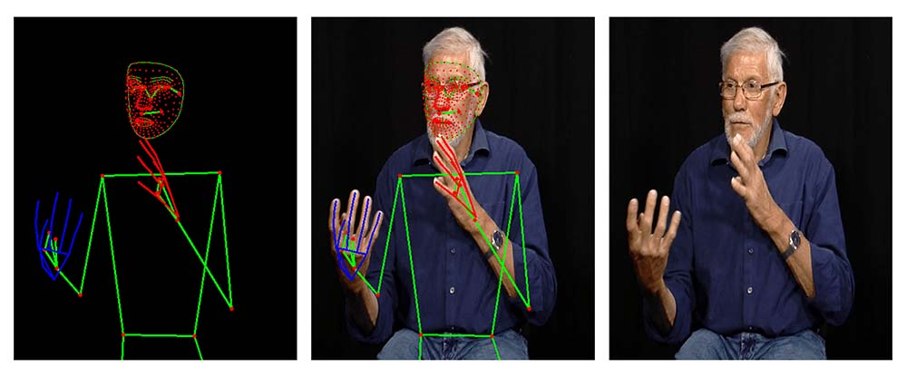

LSFB Dataset Companion Library
LSFB Dataset is a companion library for the French Belgian Sign Language (LSFB) dataset released by the University of Namur. The library provides a set of tools helping to download, manipulate and visualize the data.
This library aims to reduce drastically the time you will spend on data loading and preprocessing allowing you to focus on your research.
Datasets
Both datasets are based on the LSFB Corpus. The corpus is the result of the tremendous work achieved by the members of the LSFB lab from the university of Namur.
The corpus data were sanitized in order to make them easier to use. Additional metadata were added to enhance the datasets. Two versions of the dataset are available:
- lsfb_isol : Suitable for the isolated sign language recognition task.
- lsfb_cont : Suitable for the continuous sign language recognition task.
Both datasets are based on the LSFB Corpus containing 40 hours of annotated and translated video. Mediapipe landmarks are also available for each dataset.

Modules
The library offers you a set of tools designed to help you to download and load the dataset. The available modules are :
- download : contains utilities to download the entirety (or some parts) of the datasets.
- datasets : contains pre-written python Iterators for both the isol and continuous datasets. They could be used to feed the data in your machine learning pipeline.
Sponsors
Without our sponsors, this library would not be possible.